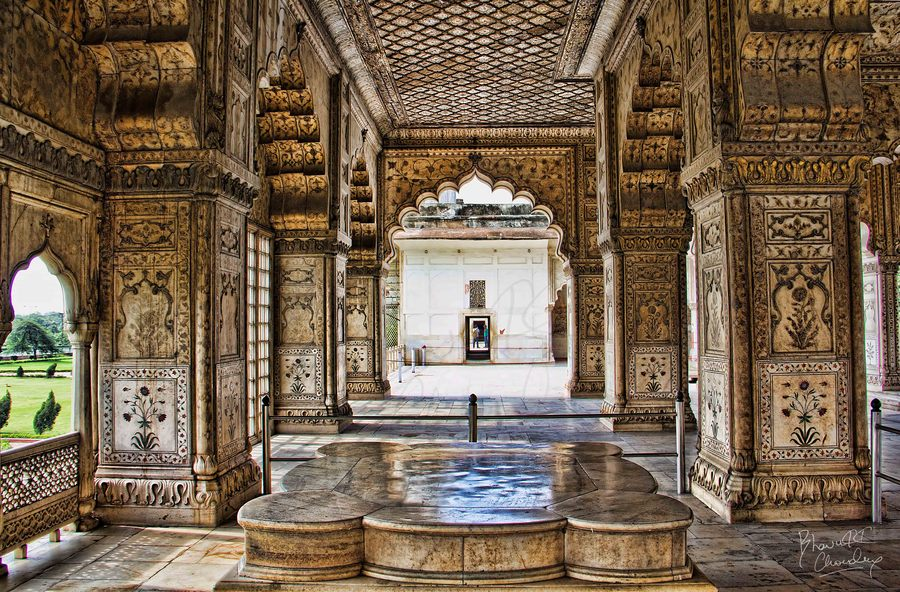
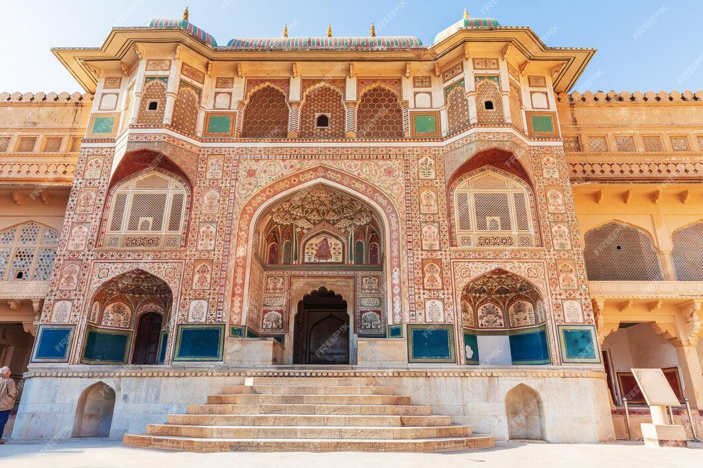

India's Historic Forts :
Red Fort (Lal Qila), Delhi
Built by: Emperor Shah Jahan in 1638
Significance: A UNESCO World Heritage Site, this red sandstone fort served as the Mughal empire's capital and remains a symbol of India's independence.
Key Features: Lahori Gate, Diwan-i-Aam, Diwan-i-Khas
images
Lahori Gate
Diwan-i-Aam
Diwan-i-Khas

Video
Location
Amber Fort, Rajasthan
Built by: Raja Man Singh in 1592
Significance: Known for its blend of Hindu and Mughal architecture, it overlooks Maota Lake.
Key Features: Sheesh Mahal (Mirror Palace), Ganesh Pol, courtyards
images
Sheesh Mahal (Mirror Palace)
Ganesh-Pol
courtyards

Video
Location
Jaisalmer Fort, Rajasthan
Built by: Raja Jaisal in 1156 AD
Significance: One of the world's largest living forts, with nearly a quarter of the city's population residing within.
Key Features: Havelis, Jain temples, intricate carvings
images
Jaisalmer Fort Havelis
Jain temples
intricate carvings
Video
Location
Sindhudurg Fort, Maharashtra
Built by: Shivaji Maharaj in 1664
Significance: A strategic coastal fort built to protect against European naval powers.
Key Features: Hidden passages and temples dedicated to Shivaji
images
Hidden passages
Temple
Sindhudurg Fort
Video
Location


 image.jpg)